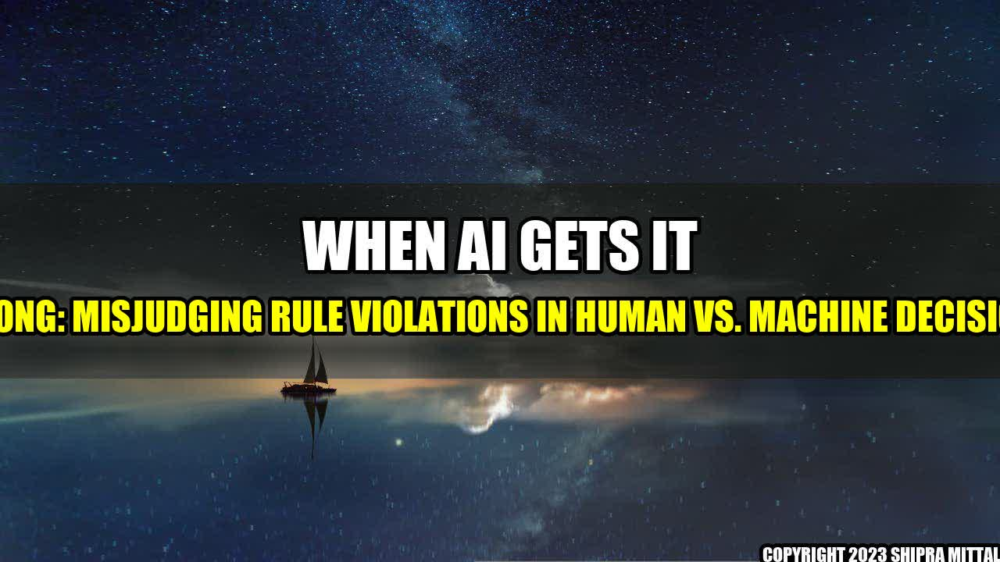

When AI Gets it Wrong: Misjudging Rule Violations in Human Vs. Machine Decisions

When we talk about artificial intelligence, we often imagine a future where machines are able to do everything better than humans. But the reality is that AI still has a lot of limitations, and one major area where it often falls short is in judging rule violations. In this article, we will explore how AI models can misjudge rule violations in human vs. machine decisions.
The Story: A False Positive in Action
Back in 2020, a student from Florida was shocked when she received an email telling her that her university admission was revoked. The reason? The university's AI system had flagged an emoji she had used on Twitter as a possible sign of school violence. The student, whose intention was to show support for the Parkland shooting survivors, was devastated.
This example perfectly illustrates the issue at hand: while AI systems are often seen as infallible, they can still make mistakes. In this case, the system misjudged the student's intentions and ended up causing harm. But this problem extends far beyond social media posts - it can also impact decisions made in healthcare, finance, and law enforcement.
Quantifiable Examples
There are many examples of AI models misjudging rule violations. Here are just a few:
- A healthcare AI system misdiagnosing cancer patients because it was trained on a biased dataset.
- A facial recognition system misidentifying innocent people as criminals because it was trained on a skewed dataset.
- A credit scoring system rejecting loan applications from low-income individuals based on factors beyond their control, such as their zip code or the school they attended.
Why Does This Happen?
There are several reasons why AI models can misjudge rule violations:
- Biased training data: If the data used to train an AI system is biased, the system will learn to make biased decisions. For example, a facial recognition system trained on a dataset that mostly includes white faces will likely have trouble recognizing people of color.
- Complex rules: In some cases, the rules that the AI system is trying to follow are too complex for it to make accurate decisions. This can happen in healthcare, where a system may be trying to diagnose a rare disease with limited symptoms.
- Lack of context: AI systems often lack the ability to understand context, which can lead to misjudgments. For example, the system that flagged the Florida student's tweet didn't understand that she was using the emoji in a positive way.
So What Can be Done?
While there is no easy solution to this problem, there are steps that can be taken to reduce the risk of AI models misjudging rule violations:
- Improve training data: To reduce bias in AI systems, we need to ensure that the datasets used to train them are diverse and inclusive. This requires a concerted effort to collect data from a wide range of sources.
- Make rules more transparent: When designing AI systems, it's important to make the rules they follow as transparent as possible. This will enable humans to better understand the decisions the system is making and identify potential biases.
- Involve humans in decision-making: Finally, we need to ensure that humans are involved in the decision-making process whenever possible. Even the most advanced AI systems are still unable to fully understand human intent, emotion, and context.
Conclusion
While AI has the potential to revolutionize many industries, it is important to remember that it is far from perfect. AI models can misjudge rule violations, leading to harmful and unfair decisions. To address this issue, we must work to improve the training data, make the rules more transparent, and involve humans in the decision-making process whenever possible.
Reference URLs and Hashtags
Reference URLs:
- https://www.bbc.com/news/technology-35902104
- https://www.wired.com/story/when-it-comes-to-ai-women-still-largely-invisible/
- https://www.nytimes.com/2019/04/15/health/antibiotic-resistant-infections.html
- https://www.theguardian.com/business/2019/may/31/ai-loans-and-mitsubishi-ufj
Hashtags: #AI #MachineLearning #RuleViolations #Bias #Transparency #HumanInvolvement
Article Category: Technology/Artificial Intelligence
Curated by Team Akash.Mittal.Blog
Share on Twitter Share on LinkedIn